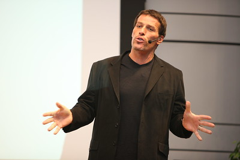
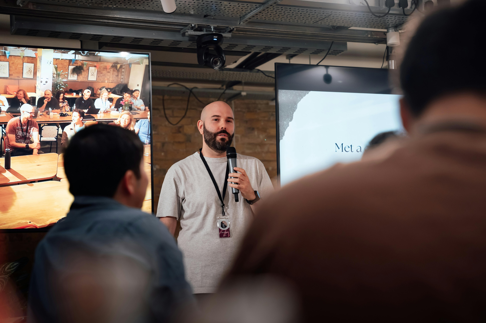

Ponentes Destacados

Alejandro Ramírez
Experto en ciberseguridad con más de 15 años de experiencia.
Diana Gómez
Ingeniera en ciberseguridad y especialista en redes seguras.

Sofía Rojas
Ingeniera de software y defensora de la seguridad en código abierto.

Laura Martínez
Especialista en análisis forense digital y directora del equipo de respuesta a incidentes de CyberDefender.

Julia Jiménez
Consultora de ciberseguridad y profesora universitaria, experta en criptografía y protección de datos.

Luis Alberto Mesa
Investigador en IA aplicada a la seguridad y desarrollador de algoritmos para detección de amenazas avanzadas.